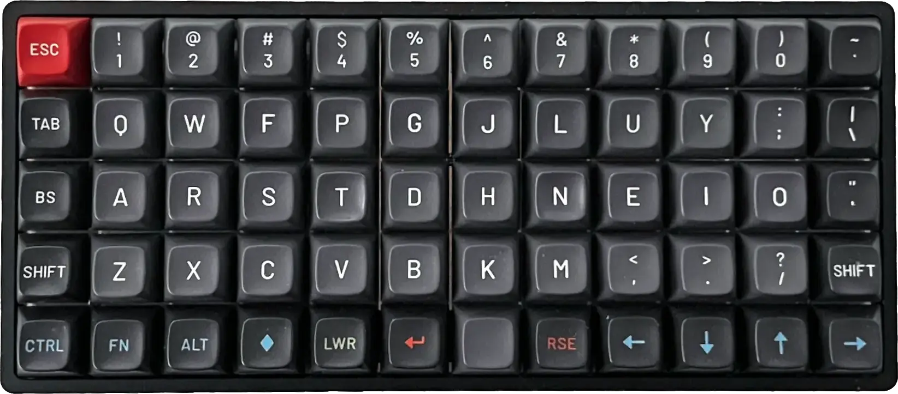

Aufgabe A:
Plane und skizziere ein mögliches Abschlussprojekt.
Aufgabe B:
Führe ein schrittweises Git-Tutorial durch.
Erstelle eine persönliche Seite im Klassen-Repository, die dich und dein Abschlussprojekt beschreibt.
Na, wie erkläre ich das… Eines Tages erkläre ich es.
Ich konnte nie tippen, obwohl ich es immer lernen wollte. Während ich
an der Organisation von Fab15 in Ägypten arbeitete, fiel mir auf, dass
Sherry Lassiter eine unglaubliche Fähigkeit zum Maschinenschreiben hat.
In diesem Moment entschied ich mich, es zu lernen. Wenn du etwas von
Grund auf neu lernst, hast du den Vorteil, keine schlechten
Angewohnheiten zu haben. Deshalb habe ich nicht das QWERTY-System
gelernt, das ursprünglich entworfen wurde, um zu verhindern, dass alte
Schreibmaschinen stecken bleiben. Ich habe mit dem Colemak System gelernt. Colemak ist so
entworfen, dass die am häufigsten verwendeten Buchstaben im Englischen
auf der mittleren Reihe liegen. Ich habe eine ortholineare
Tastatur, die ich mit dem Colemak-Layout versehen habe, und ich übe
etwa fünf Minuten am Tag. Was mir am meisten an der Colemak-Verteilung
gefällt, ist, dass die Löschtaste links von der Taste A
ist.

Ich habe auch eine Software auf macOS, die meine Tastaturanordnung auf Colemak umstellt und die Funktion der Feststelltaste durch das Rückwärtslöschen ändert.
Mein Ziel ist es, ausschließlich einen Texteditor in der
Kommandozeile zu verwenden. Ich habe schon einige Kenntnisse zu
vim und möchte mein Wissen vertiefen. Ich mag die Idee, nur
die Tastatur zum Texteditieren zu verwenden. Um der Versuchung zu
widerstehen, Visual Studio Code zu nutzen, habe ich es deinstalliert.
Der Texteditor vim ist anfangs ziemlich spartanisch. Deshalb werde ich
einige Plugins installieren. Hier ist eine Liste, die ich im Laufe der
Zeit erweitern werde:
Weitere nützliche Links:
Seien wir ehrlich. Ich habe nicht viel Freizeit und bald werde ich noch weniger Zeit haben. Deshalb benötige ich ein System, das es mir ermöglicht, die Dokumentation effizient zu schreiben. Ich werde eine neue Technik ausprobieren, die es mir erlaubt, die Dokumentation in zwei (oder mehr) Sprachen zu haben. Im Moment wird der größte Teil des Textes, den du liest, meinem Mac auf Spanisch diktiert.
Das spart beim Schreiben etwas Zeit. Einige Teile, wie Code, muss ich manuell tippen. Ich muss auch manuell Korrekturen vornehmen, z.B. wenn ich Links einfüge.
Auf diese Weise erstelle ich Markdown-Dateien mit Dokumentation auf
Spanisch. Der Grund, warum ich es nicht direkt auf Englisch diktiere,
ist, dass mein Akzent so schlecht ist, dass mich der Computer nicht
versteht. Der Name der Datei jeder Woche beinhaltet die Woche, in der
ich mich befinde, und die Sprache der Dokumentation. In diesem Fall:
w01-es.md. Ich werde künstliche Intelligenz verwenden, um
den Text dieser Datei ins Englische und Deutsche zu übersetzen und als
w01-en.md bzw. w01-de.md zu speichern. Das
KI-Modell muss in der Lage sein, die Markdown-Syntax zu erkennen und
beizubehalten. Es muss auch interne Links bearbeiten, denn Links, die zu
w02-es.md in der spanischen Dokumentation führen, müssen in
der englischen Dokumentation zu w02-en.md geändert werden.
Da es möglich ist, dass sich das Modell im Laufe des Fab Academy
verbessert (oder sogar ändert), werde ich den Text auf Spanisch behalten
und die Übersetzung aller Dateien jede Woche neu durchführen. Ich werde
nur die Originaldatei auf Spanisch bearbeiten. Ich werde die generierte
Übersetzung nicht manuell bearbeiten. Also, wenn das, was du auf
Englisch oder Deutsch liest, keinen Sinn ergibt, gib OpenAI oder dem
Modell, das ich verwende, die Schuld.
Ich habe César Garcia von La Hora Maker gebeten, mir bei der Suche nach einem Modell für die Übersetzung zu helfen. César hat mir empfohlen, die Whisper API von OpenAI zu nutzen, die direkt vom spanischen Audio übersetzen kann. Im Moment bin ich nur an der Übersetzung interessiert, also habe ich einen Assistenten in der OpenAI-API mit diesen Anweisungen erstellt:
Übersetzen Sie den Text von Spanisch auf Englisch und Deutsch. Wenn Textteile in anderen Sprachen als Spanisch vorhanden sind, übersetzen Sie diese nicht. Übersetzungshinweise: Fassen Sie jede Übersetzung zwischen diesen Zeilen ein: “=== BEGIN ENGLISH TRANSLATION ===” und “=== END ENGLISH TRANSLATION ===” für Englisch, sowie “=== BEGIN GERMAN TRANSLATION ===” und “=== END GERMAN TRANSLATION ===” für Deutsch. Dies ermöglicht es einem Skript, die Übersetzungen leicht zu identifizieren und zu extrahieren. Analysieren Sie vor Beginn der Übersetzung das gesamte Dokument gründlich, um den Gesamtkontext zu verstehen. Identifizieren Sie Redewendungen und Sprachnuancen vom Spanischen ins Englische und Deutsche und übersetzen Sie diese. Stellen Sie sicher, dass die ursprüngliche Bedeutung erhalten bleibt. Konzentrieren Sie sich darauf, die ursprüngliche Bedeutung zu vermitteln, anstatt eine wortwörtliche Übersetzung anzubieten. Links: Übersetzen Sie den Text innerhalb eckiger Klammern von Markdown-Links. Wenn die URL eines Links eine andere Markdown-Datei ist, ändern Sie die Link-URL, um auf die entsprechende Sprachdatei in Englisch oder Deutsch zu verweisen. z.B., ändern Sie w01-es.md zu w01-en.md für die englische Übersetzung oder w01-de.md für die deutsche Übersetzung. Ignorieren Sie Codeausschnitte in der Übersetzung; Erkennen und bewahren Sie Marken und Namen in ihrer ursprünglichen Form, übersetzen Sie diese Elemente nicht. Verwenden Sie die korrekte Grammatik und Syntax für die jeweilige Übersetzung im endgültigen Text. Übernehmen Sie einen informellen Stil für die Übersetzung. Denken Sie daran, dass jede dieser Regeln wesentlich ist und ohne Ausnahme befolgt werden muss. Die Nichteinhaltung einer dieser Regeln führt zu einer inakzeptablen Übersetzung.
Ich ändere die Anweisungen von Zeit zu Zeit, um zu versuchen, die Übersetzung zu verbessern.
Diese Seite, die du liest, hat etwa 2800 Tokens. Du kannst herausfinden, wie viele Tokens ein Text hat, indem du den OpenAI Tokenizer verwendest. Die Kosten für die Übersetzung dieser Seite in beide Sprachen betragen ungefähr 20 US-Cent, wenn man bedenkt, dass jedes 1000 Tokens 0,01 USD für den Input und 0,03 USD für den Output kosten. Das scheint mir ziemlich viel Geld zu sein, und außerdem werden die Kosten im Verlauf der Fab Academy steigen. Aus diesem Grund werde ich die Inhalte nur übersetzen, wenn ich der Meinung bin, dass die Arbeit fortgeschritten ist.
Auf meiner Wunschliste werde ich weiterhin nach einem lokalen Modell suchen. Auf diese Weise könnte ich die Inhalte häufiger übersetzen.
Zu Beginn habe ich das API-Fenster von OpenAI verwendet. Jetzt habe ich diesen Prozess mithilfe von Python in der Befehlszeile automatisiert. Ich bat Bing Copilot und die kostenlose Version von ChatGPT, die OpenAI-Bibliothek zur Durchführung der Übersetzung zu verwenden. Nach einigem Hin und Her (die KI generiert normalerweise nicht beim ersten Mal korrekten Code), war ich frustriert und beschimpfte Bing.

Letztendlich musste ich die Dokumentation der API lesen, um das Programm zum Laufen zu bringen.
Bevor ich die Seiten übersetze, die ich geändert habe, muss ich sie
mit git add hinzufügen. Dank dessen kann ich die Kosten
begrenzen und kontrollieren. Einmal gemacht, führe ich einfach
python translate-en.py aus, und das Skript generiert die
ins Englische übersetzten Markdown-Seiten. Das Gleiche mache ich für
Deutsch.
Normalerweise führe ich diesen Schritt nicht isoliert durch, da ich ihn im nächsten Schritt eingebettet habe.
Die Dokumentation der Fab Academy muss in Form einer Webseite
präsentiert werden. Um die HTML-Seiten aus den Markdown-Dateien zu
generieren, habe ich ein Bash-Skript, das ich für das Programm FabZero gemacht habe, in
Python übersetzt. Der Code konvertiert alle .md-Dateien in
.html mit Hilfe von Pandoc unter Verwendung einer
CSS-Stilvorlage. Während der Konvertierung, wenn
ein Link zu einem Markdown-Dokument gefunden wird, wird es zu einem Link
zu seiner entsprechenden HTML-Datei konvertiert, indem dieser LUA-Filter verwendet wird.
Das Skript automatisiert auch optional die Übersetzung des vorherigen Abschnitts und das Hochladen von Dateien auf Github. Wenn ich also meinen Fortschritt hochladen möchte, schreibe ich:
python auto.py --translate updating week 1
Auf diese Weise übersetzt das Skript die Seiten, falls es
--translate unter den Argumenten findet. Es konvertiert
auch alle Seiten in HTML und lädt dann alles auf Github hoch, solange
eine Nachricht vorhanden ist, in diesem Fall
updating week 1. Wenn es keine Nachricht gibt, führt es
keinen der mit git verbundenen Prozesse durch.
Du kannst das Skript hier sehen: auto.py
Schauen wir mal, was ich bis jetzt auf Github habe:
.md-Dateien auf Spanisch.md-Dateien.html-Seiten aller .md-Dateien, die
von Pandoc generiert wurden.Das Einzige, was jetzt noch fehlt, ist ein Webserver. Und das kannst du von Github aus machen, indem du zum Repositoriumseinstellungen gehst.

Dies wird eine Datei in .github/workflows/static.yml
erstellen, von der ich nur den runner ändern musste, weil
runs-on: ubuntu-latest nicht funktionierte. Ich habe es in
runs-on: ubuntu-22.04 geändert und beim Commit wurden die
Seiten automatisch bereitgestellt.
https://thebeachlab.github.io/backtofabacademy2024/
All dies macht das Schreiben der Dokumentation derzeit etwas langsam und etwas mühsam. Aber ich glaube, dass mit diesem System die Geschwindigkeit drastisch von Woche zu Woche steigen wird und ich am Ende in der Lage sein werde, mit großer Geschwindigkeit und Detailtreue zu dokumentieren.
Außerdem glaube ich, dass diese Methode vielen Menschen, die ihr Talent nicht zeigen können, weil sie eine andere Sprache nicht beherrschen, helfen wird. Es ist ungerecht, dass das passiert, und ich hoffe, dass die KI Menschen hilft, zu zeigen, wie wertvoll sie sind.
Man könnte denken, dass ich, weil ich Git seit 10 Jahren benutze, bereits alles weiß, was es über das Versionskontrollsystem zu wissen gibt. Auf keinen Fall. Dies sind die Dinge, die ich während dieses Fab Academy-Zyklus verbessern möchte:
(Fortsetzung folgt…)
(Fortsetzung folgt…)
Alles, was mit dem Abschlussprojekt zu tun hat, habe ich in den entsprechenden Abschnitt verschoben.